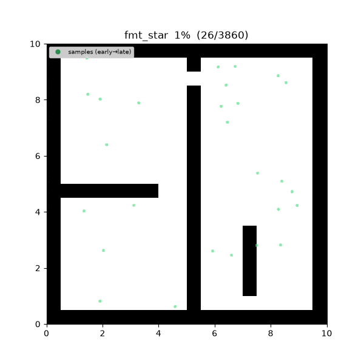
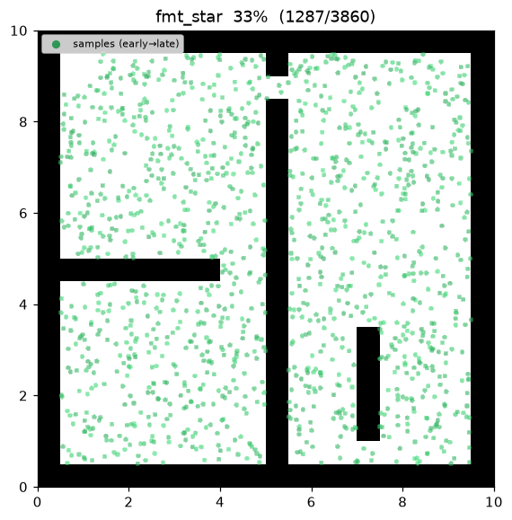
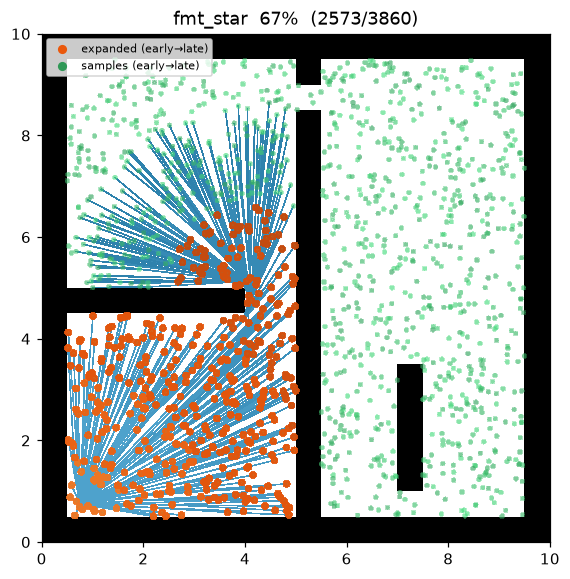
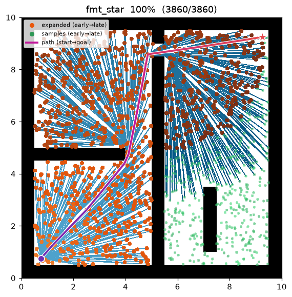
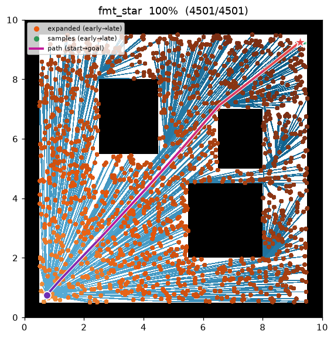

FMT* (Fast Marching Tree)¶
| 항목 | 내용 |
|---|---|
| 분류 | sampling-based, batch, asymptotically optimal |
| 요구 capability | SamplingSpace |
| 완전성 | probabilistically complete |
| 최적성 | asymptotically optimal — 표본 수 → ∞ 에서 최적 경로에 확률 1 로 수렴 |
| 복잡도 | 단일 배치 1-pass + lazy 충돌 검사 → PRM*/RRT* 보다 충돌 검사 수가 적다 |
| 원 논문 | Janson, Schmerling, Clark & Pavone (2015) 1 |
배경¶
Janson 등1 은 고정된 하나의 표본 배치 위에서 트리를 cost-to-come 순으로 바깥으로 "행진(march)"시키는 lazy 동적 계획법으로 점근 최적을 달성하는 FMT* 를 제안했다. RRT* 처럼 rewire 를 반복하지도, PRM* 처럼 모든 쌍을 미리 잇지도 않는다 — 단 한 번의 pass 로 표본 그래프 위의 최적 cost-to-come 을 계산한다.
핵심은 두 가지다. (1) frontier(open) 노드 중 cost-to-come 이 가장 작은 \(z\) 를 꺼내 그 근방의 미방문 표본을 확장한다 — Dijkstra 의 파면(wavefront)과 같은 순서다. (2) 각 표본 \(x\) 를 붙일 때, 근방 open 이웃 중 \(\mathrm{cost}(y)+\lVert y-x\rVert\) 를 최소화하는 \(y\) 를 고르고 그 한 간선만 충돌 검사한다(lazy). 충돌하면 \(x\) 는 미방문으로 남아 이후 다른 \(z\) 에서 붙을 기회를 얻는다.
연결 반경은 PRM*·BIT* 와 같은 줄어드는 반경 \(r_n=\gamma\sqrt{\log n/n}\) 을 쓴다.
동작 원리¶
FMT_STAR(start, goal):
V ← {start, goal} ∪ sample_free(num_samples) # 단일 고정 배치
r ← gamma · sqrt(log n / n) # 줄어드는 반경 (d = 2)
N ← radius_neighbors(V, r) # 배치당 1회 근방 그래프
cost[start] ← 0; open ← {start}; z ← start
while true:
for x in N[z] if x unvisited:
y* ← argmin_{y ∈ N[x] ∩ open} cost[y] + ‖y − x‖ # 국소 최적 open 부모
if y* exists and is_motion_valid(y*, x): # lazy: 이 간선만 검사
parent[x] ← y*; cost[x] ← cost[y*] + ‖y* − x‖
open.add(x) # frontier 로 승격
open.remove(z) # z 는 닫힘
z ← open 에서 cost 최소 노드 (min-heap pop)
if open 이 비면: break # 도달 불가
if z == goal: success; break
return path(goal)
frontier 는 cost-to-come 을 키로 하는 min-heap 이다. FMT* 는 open 노드의 cost 를 결코
낮추지 않으므로 heap 항목은 항상 유효하고, in_open 플래그로 지연 멤버십을 판정하면 충분하다.
성질¶
- 완전성: probabilistically complete1.
- 최적성: asymptotically optimal. 줄어드는 반경과 cost-to-come 행진 순서만으로 표본 그래프 위 최적 cost-to-come 을 복원한다 — rewire 없이 1-pass1.
- 비용: lazy 충돌 검사 — 표본마다 국소 최적 간선 하나만 검사하므로, 후보 간선을 폭넓게 검사하는 PRM*/RRT* 보다 충돌 검사 횟수가 적다. 충돌 검사가 비싼 문제에서 특히 유리하다.
파라미터¶
| 이름 | 타입 | 기본값 | 범위 | 설명 |
|---|---|---|---|---|
num_samples |
int | 1500 | [1, 200000] | 단일 배치로 뿌리는 충돌 없는 샘플 수 (start/goal 제외) |
gamma |
float | 30.0 | [0.01, 1000.0] | marching 연결 반경 계수 γ. r_n = γ·(log n / n)^(1/2) |
seed |
int | 1 | [0, 2^31−1] | 난수 시드 (재현성) |
행진 규칙과 점근적 최적성¶
연결 반경. PRM* 와 같은
를 쓴다. 이 반경이 기대 이웃 수를 \(\Theta(\log n)\) 로 유지한다.
행진(dynamic programming). frontier \(H\) 에서 cost-to-come 최소 노드 \(z\) 를 꺼내, 근방 미방문 표본 \(x\in N(z)\) 마다
로 붙이되 간선 \((y^*,x)\) 하나만 충돌 검사한다(lazy). \(z\) 를 cost 오름차순으로 꺼내는 순서가 Dijkstra 파면과 같아, 한 번 닫힌 노드의 cost 는 최종값이다.
정리 (점근적 최적성, Janson et al. 2015). 위 반경 하에서 FMT* 가 반환하는 비용 \(Y_n\) 은
직관. lazy 검사가 놓치는 간선은 국소 최적이 아니므로 최적 경로 비용에 기여하지 않는다. 표본이 조밀해지면 각 최적 부분 경로가 근방 그래프 안에 \(\epsilon\) 오차로 존재하고, 행진 순서가 이를 정확히 복원한다.
구현 노트¶
- C++:
cpp/src/global_planning/fmt_star.cpp, Python:python/navigation/global_planning/fmt_star.py - 배치 표본 위 근방 그래프(
radius_neighbors)와 줄어드는 반경(rgg_radius)은 PRM*·BIT* 와 공유하는sampling_common/_sampling에 있다. - FMT* 는 트리를 한 번에 마칭하므로 PRM 계열의 로드맵(
roadmap_common/_roadmap)이 아니라 배치 근방 그래프 위에서 직접 동작한다.
방출 trace 이벤트¶
planning_started → sample_drawn* → (edge_added, node_expanded)* → path_found → planning_finished
sample_drawn 은 배치 표본, edge_added 는 표본을 붙일 때의 간선, node_expanded 는 행진에서
frontier 최소 노드 \(z\) 를 꺼내는 순간이다 — 이 둘이 파면 확장 과정으로 번갈아 방출된다.
Demo¶
maze01 — 표본 배치가 뿌려진 뒤, 파면이 start 에서 바깥으로 cost 오름차순으로 번지며 트리를
키운다. goal 에 파면이 닿는 순간 최적 경로가 확정된다.

탐색 중간 과정 (좌 → 우: 파면 초반 / 확산 / 최종 경로):
 |
 |
 |
open01 최종 결과 — 거의 직선에 가깝다:

측정치 (Python, seed = 1, trace on):
| map | path cost | 표본 수 | expanded (행진 frontier 노드) |
|---|---|---|---|
| maze01 | 13.595 | 1,502 | 1,090 |
| open01 | 12.058 | — | — |
C++ 구현도 동일 시나리오를 미러링하며, 언어 간 난수 스트림 차이 범위 안에서 같은 결과를 낸다.
재현:
python python/demos/demo_fmt_star.py \
--map maps/grid/maze01.yaml --scenario maps/scenarios/maze01_s1.yaml \
--params configs/global_planning/fmt_star.yaml --trace out/fmt_star.jsonl
python tools/viz/replay.py out/fmt_star.jsonl --gif out/fmt_star.gif
References¶
-
Janson, L., Schmerling, E., Clark, A., & Pavone, M. (2015). "Fast marching tree: A fast marching sampling-based method for optimal motion planning in many dimensions." The International Journal of Robotics Research, 34(7), 883–921. doi:10.1177/0278364915577958 · PDF (arXiv) ↩↩↩↩
-
Karaman, S., & Frazzoli, E. (2011). "Sampling-based algorithms for optimal motion planning." The International Journal of Robotics Research, 30(7), 846–894. doi:10.1177/0278364911406761 · PDF (arXiv) ↩